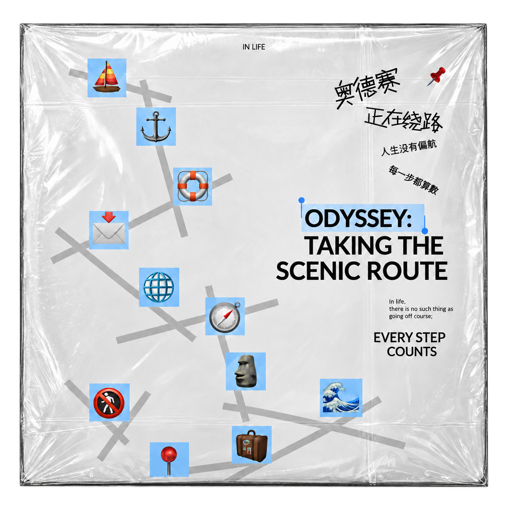

奥德赛正在绕路
运营设计Odyssey is taking a detour.
Growth is not about never losing your way again; it is about gradually learning to trust your own direction when there is no navigation to guide you. The odyssey may involve detours, but life goes on. Take your time; we haven't gone off course.